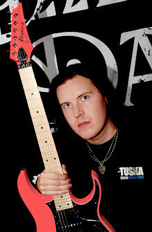
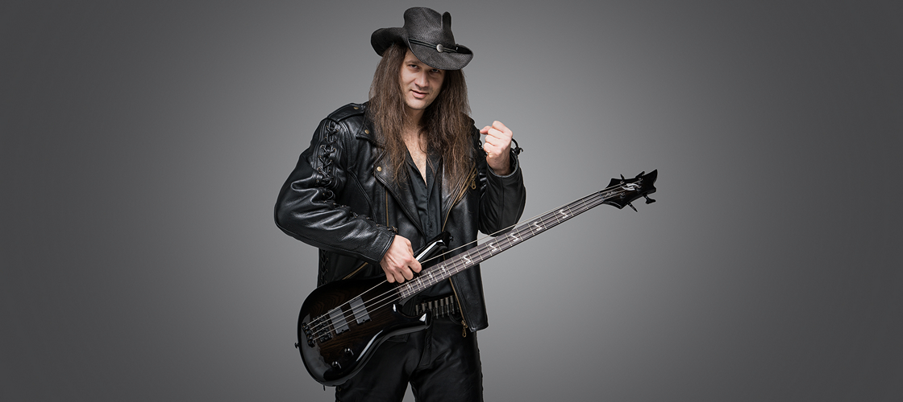
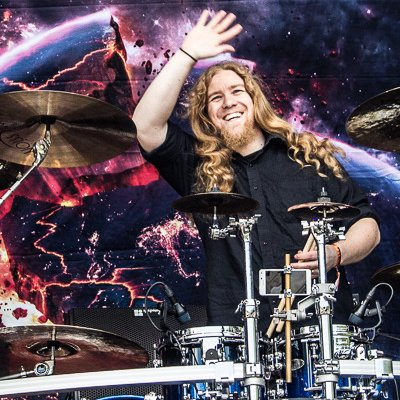

History
A five-piece Helsinki based heavy metal band BEAST IN BLACK was founded by Anton Kabanen soon after he had parted ways with BATTLE BEAST in 2015. The international line-up consists of Yannis Papadopoulos (voc), Mate Molnar (bass), Sami Hänninen (drs), Kasperi Heikkinen (gtr) and Anton Kabanen (gtr, voc). By the end of 2015 the band had already played their first gig as an opener for NIGHTWISH without even having their debut album out yet. The making of the album was in progress and it was completed in the summer of 2017. A record deal was made with NUCLEAR BLAST almost immediately after the completion of the album. The debut album titled "BERSERKER" is set to be released in November 2017 and it continues in the style of Anton's previously composed works which include the first three Battle Beast albums. And let it be mentioned that one of the album cover art deserves a special mention as well, since it marks the return of the collaboration between Anton and Roman Ismailov who was the original illustrator and graphic artist for Battle Beast.
Anton Kabanen founded the band in 2015 after he left his former band Battle Beast earlier in the same year. Like Battle Beast, the band's name is a tribute to the Japanese manga and anime series Berserk. Beast in Black signed with the Nuclear Blast label and released the first album, Berserker in November 3, 2017, which received a very positive response worldwide. The debut album ranked seventh on Finnish charts albums. In addition, Berserker also charted in Germany, United Kingdom, Sweden, Switzerland and France. Yannis Papadopoulos at Kuopio Rock 2019.
Following his decade-long tenure as lead guitarist for Helsinki power metal classicists Battle Beast, Anton Kabanen left his former band and founded the like-minded Beast in Black in 2015. Rounding out his new outfit were singer Yannis Papadopoulos, rhythm guitarist Kasperi Heikkinen, bassist Mate Molnar, and drummer Sami Hänninen. After joining the Nuclear Blast roster, Beast in Black made their debut in 2017 with Berserker. In addition to its number seven chart placement at home, the album fared well throughout Europe and established the band within the international metal community. In early 2018, just prior to joining fellow Finns Nightwish on tour, it was announced that drummer Hänninen would be replaced by Atte Palokangas, who later made his recorded debut on Beast in Black's 2019 follow-up From Hell with Love. In October 2021, Beast in Black issued Dark Connection, their third long-player. It was recorded, produced, and mixed by Kabanen.
On March 21, 2018, it was announced that Beast in Black would be opening for Nightwish on the European leg of their Decades: World Tour. The band's second album, From Hell with Love, was released on February 8, 2019. After the release of the album, the band did their first headline tour in Europe with the Finnish industrial metal band Turmion Kätilöt as support. On October 26, 2021, Beast in Black released its third album, Dark Connection. In addition to Berserk, several songs in the album reference science fiction series such as Blade Runner and Battle Angel Alita. The album charted in Finland, Sweden, Switzerland, the United States, United Kingdom, Germany and Japan, ranking first in Finland.
Current Members
- Anton Kabanen (lead guitarist)
- Yannis Papadopoulos (lead vocals)
- Kasperi Heikkinen (rhythm guitar) 
- Máté Molnár (bass) 
- Atte Palokangas (drums) 